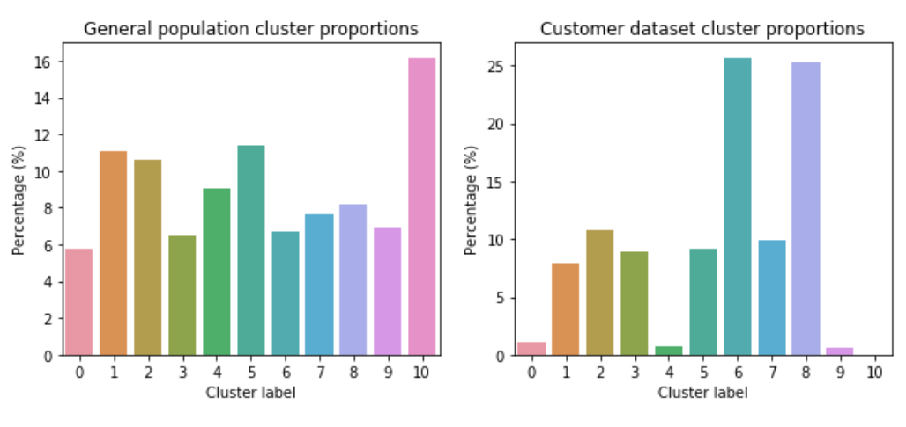

About me
Hello! I'm currently a research engineer (if you're wondering what this means, I don't really know either, but what I do is help others analyze and understand numbers 🙂) at Verizon Media, and you've stumbled across my portfolio page. This is where you can find some examples of the work I've done, as well as other personal projects and random things. It's always a work in progress, and maintaining it is also a way for me to explore my interest in webpage design!
I completed my master's in statistics at Stanford in 2018, and graduated from UCLA in 2014. My experience includes stints in consulting, digital marketing. Some of my interests include education, data visualization, and linear models. In my free time I enjoy music, reading, and trying out new places to eat.
About the design
The starfield design of this page arose a bit inadvertently (it's also kinda old, I hope to update it soon!) I was experimenting with jQuery and Javascript, trying to see what I was able to do with it graphically, and I ended up creating a starfield with a (sort-of) parallax effect, which was a lot cooler (to me) than what I was setting out for.
The starfall effect is created with d3. I think it's pretty neat.
PROJECTS
Udacity Data Scientist Nanodegree Term 1
July 2018 - Oct 2018In Fall 2018, I signed up and completed the curriculum for Term 1 of the Udacity Data Scientist Nanodegree of part of ongoing professional education for myself. This consisted of the following three projects:
The main goal of this project was to use scikit-learn to implement a few supervised learning algorithms for a binary classification task. Included exercises on data preprocessing, model training and evaluation, and explaining pros/cons of each algorithm.
The main goal of this project was to use PyTorch to build an image classifier. Adapted a pre-trained model (vgg19) for the task, performed image processing and inference. Finally, created command line (Python) scripts for training and prediction.
The main goal of this project was to use k-means clustering to identify customer segments. Included missing data and outlier handling, feature engineering and transformation, and evaluation of clustering results.
{{project.title}}
{{project.date}}{{project.description}}
Time traveler
This is a fun section I keep here mainly just for me (but also for you!), where you can access older versions of this webpage. Click on these links to see how this website has changed over time as I've updated the design and added content.
Contact me
- E-mail: brianwang92(at)gmail(dot)com